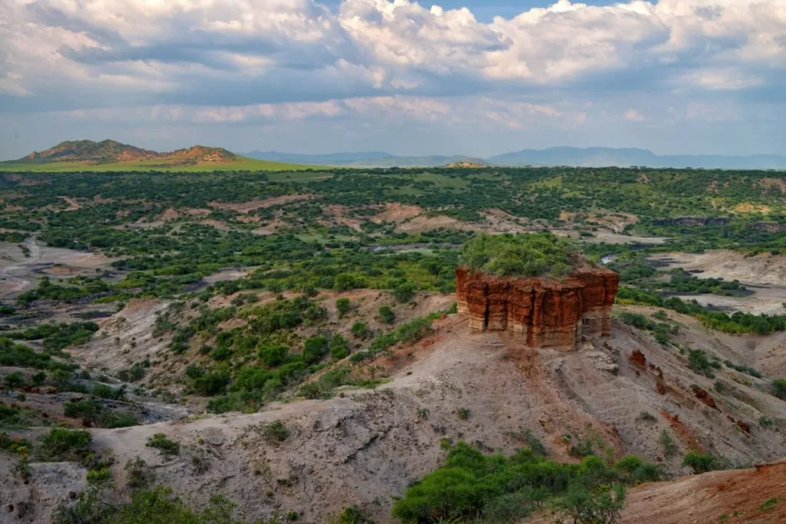
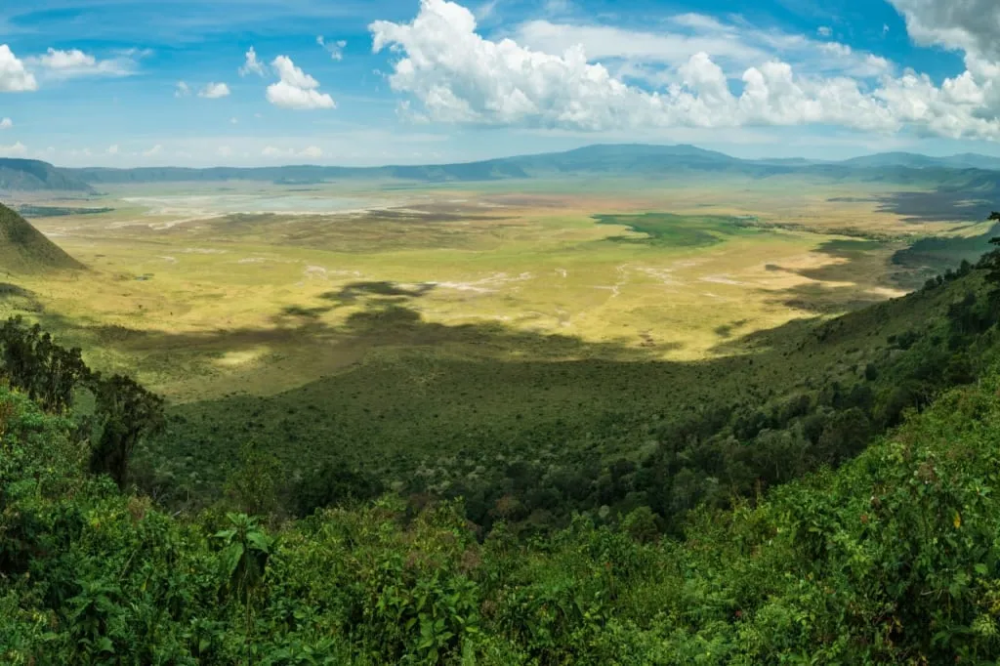
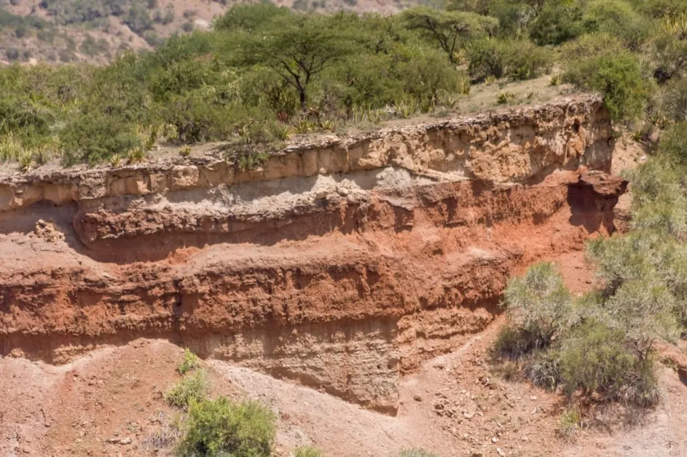
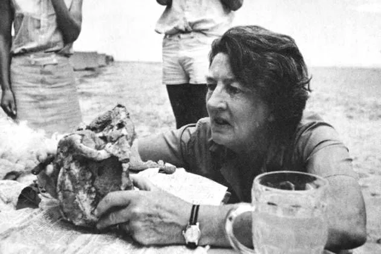
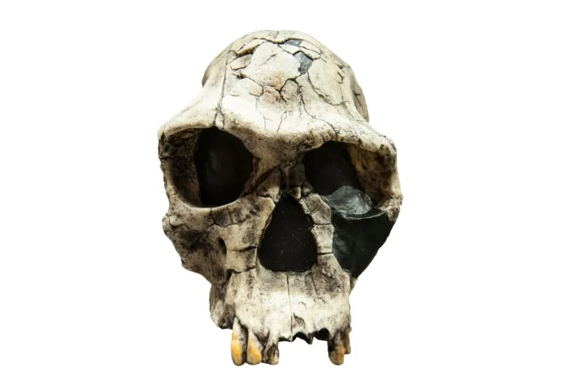
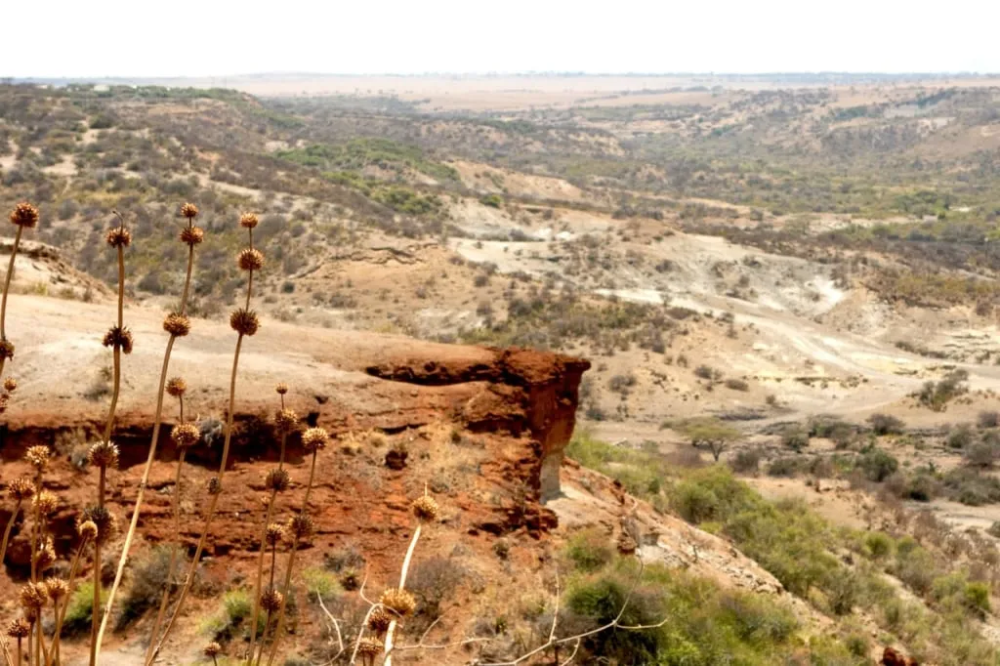
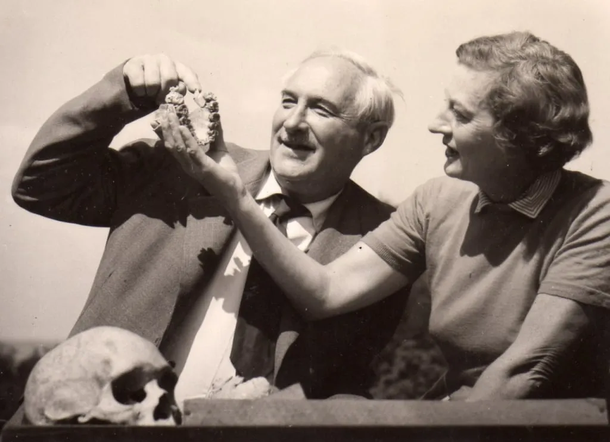
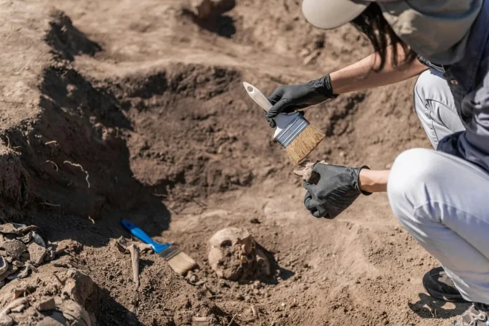

Safari
Safari In the north of the African country called Tanzania lies a unique 48 km (30 mi) -long gorge. In that place, an ancient volcano has preserved the history of humankind for us. Remnants of the first humans and earliest stone tools found here answered many questions we asked about ourselves. In this article, we cover the history of the most important discoveries, answer the common questions, and suggest further tools and resources that will help you to take a deep dive into our most ancient past.

Did the Leakeys really discover 1.8 million-year-old skeletons in the Olduvai Gorge? What can those findings tell us about our past, and where is the gorge located?
In Tanzania, Africa, somewhat south of the equator, there is a special place that has been holding scientists’ attention for more than half a century. Why is Olduvai Gorge important to archaeologists? In 1960, the Leakey spouses, a couple of anthropologists who worked there for many years, found the remains of a previously unknown It was a Homo habilis, the “handy man”, the first representative of the Homo genus, the direct ancestor of the modern human.
After the Olduvai Gorge discovery, many more followed, including those made in different parts and regions of Tanzania and other countries. Those discoveries provided one clue after another until a unified theory of the African origin of man was developed. Today, after the results of genetic studies have been published, the theory is considered to be generally accepted. Apparently, it was the descendants of Homo habilis that first left Africa and began the expansion of humans on Earth.
Other excavation sites in Tanzania are also known, for example, Laetoli. Those yielded generous findings as well. But the site which gained the most fame is exactly wwhich lies 150 km (90 miles) away from the town of Arusha. Here, in the eastern Serengeti Plains, within the Ngorongoro Conservation Area, we humans came to understand that our history had begun in this very place. A qualitative evolutionary transition from Australopithecus to Homo happened here, in the sunny and plentiful Ngorongoro area.
A monument shaped like two huge fossil skulls was erected in Ngorongoro to commemorate the discoveries that significantly impacted our understanding of the history of humankind. The monument shows the exact shape of the actual skulls dug out in Olduvai. Those belonged to two genera of Homo, which have been previously unknown. In the gorge proper, a museum of anthropology and human evolution operates, where unique artifacts are preserved.
What is so interesting about Olduvai?

The story of the Olduvai discovery
There’s an anecdote circling among anthropologists about how the location of Olduvai Gorge was discovered. In 1910, a German scientist who was fond of butterflies set out to explore the Ngorongoro volcanic crater and after seeing a pretty butterfly he started to chase it. In a stroke of ill luck, the scientist stumbled, fell from the precipice, and went unconscious. When he regained consciousness, he found himself lying in a gorge full of bones and tools of the ancient humans. This version has a strong cinematographic touch to it. Even more so if one recalls the first finding of the said German: the bones of a prehistoric three-toed horse.
That German scientist was Wilhelm Kattwinkel - a doctor and anthropologist. It is a fact that in 1910 and 1911, he went to on an expedition. His goal was to study African Trypanosomiasis (African Sleeping Sickness). Speaking of which, this article on immunizations prior to a trip to Tanzania contains more information about this disease.
And so, Kattwinkel from Germany realized that he came across a potentially fascinating archaeological site and called it Oldway. The name was given by mistake, based on the Masaai word Oldupai, which the local tribe used to refer not to the place itself but to a plant that is widely spread there. For English speakers, the most popular name for that plant is sisal (Agave sisalana). If it all sounds a little confusing - don’t worry, below we’ll talk about the history of that place step by step.
The first findings and misfortune
Other scientists from Germany, among whom there were Wilhelm von Branca and Hans Reck, rushed to that place, so rich with artifacts to be discovered. An expedition led by Hans Reck, who specialized in volcanology, found a skeleton in 1913. At Reck’s estimate, the its age might have been 150,000 years.

It was exactly due to volcanic lava that the findings from the Olduvai Gorge have been preserved exceptionally well. The local geology made the work and the dating process easier: the canyon wall was clearly separated into five different historical layers. But, for the sake of argument, what would have happened if it turned out that the skeleton found here had been re-buried later? The scientist kept arguing about the age of the skeleton. But radiocarbon dating solved the mystery, showing that the bones were “merely” 17,000 years old.
Louis Leakey, an anthropologist from Britain who then worked in neighboring Kenia, came close to the same values in his estimations. He made the discoveries of artifacts of the same age himself, too. The British scientist was reputed to be lucky; his intuition quite often led to success during excavations. Years later, upon the end of World War I and the postwar political reorganization of the former German colony now under British rule, Leakey set up a new expedition to Olduvai. He invited Hans Reck to go with him, and the two made a wager for 10 pounds that Leaky would find something of interest on the very first digging day.
It took Louis Leakey a mere six hours of work upon his arrival at the digging site in September 1931 to find an ancient tool, a cleaver made of volcanic rock. He won the wager, and in the following days, the archaeologists excavated a collection of 77 similar cleavers. A great number of other objects were found too, and the archaeologists had those sent to Britain posthaste, estimating the age of the findings as several hundred thousand years old. Such bold assumptions were met with disapproval, and Louis Leakey fell out of grace both among the scientists and the laypeople.
Some further setbacks in the anthropologist's work, a series of public scandals stemming from his personal life, criticism by his opponents, problems with his career at Cambridge, and then the World War and the Kenyan Mau Mau Rebellion diverted both the scholar's attention from his initial research and public awareness from the gorge in East Africa. It was not until the 1950s that Louis Leakey and his wife Mary returned to continue their intensive investigations at Olduvai.
Ground-breaking discoveries
In July 1959, there was another expedition to Olduvai. Louis Leakey was present at the excavations, but his health no longer allowed him to fully engage in field research. On the morning of July 17, the scientist did not feel well, and he remained in the camp, while his wife, archaeologist Mary Leakey went to the excavation site. That day she found a fragment of an unusual bone: part of a jaw with two teeth. It looked as if it belonged to a hominid, but certainly not to a modern man or a humanoid ape.
I’ve got him!
exclaimed Mary joyfully as she headed back to the camp

In the following days, the skull, nicknamed the Nutcracker, was collected from the remaining fragments found nearby. It was suggested that this was a new species of Australopithecus, which was titled After more discoveries and a detailed study of the remains, this species was more accurately named Paranthropus boisei, and its time of life was determined to be about 1.75 million years ago. In this way, it was found that this species was most likely a member of a sister group to humans which became extinct. However, the controversy continues to this day, and no final verdict has been agreed upon.
A chipped pebble was found next to the Nutcracker, and it clearly served as a primitive stone tool. Louis Leakey suggested that the hominid species found was the first animal in history to use tools. The excavation continued, and the next discovery again caused a sensation in the scientific community.
In the following year, 1960, Louis Leakey was no longer able to direct the excavations because of illness, so Mary Leakey became the director. Soon, several remains were found that interested anthropologists from around the world. At the same time, geophysicists dated the earth layers in which the finds were made, which determined their ages to be from 1.89 million years ago to 1.75 million years ago. All this instantly brought back keen interest in Olduvai and in Louis Leakey himself, and several major grants were awarded for further work.
Thus, in 1960, parts of a skeleton of Homo erectus, which is considered the direct ancestor of modern humans (Homo sapiens), as well as fragments of the skeleton of Homo habilis, were found in the Olduvai Gorge. And while erectus had been found before in Asia and Europe, the habilis found in Olduvai was the first discovery of such kind. A total of two discoveries of erectus and six of habilis were made in Olduvai. It turned out that the stone tools belonged to the Homo habilis, for which the anthropologists called it “handy”.
Homo habilis is deemed to be the first representative of the genus Homo, as they surpassed the older australopithecine apes in several descriptive characteristics at once. Further findings in neighboring Kenya suggested that the human species already existed These conclusions were made possible due to a breakthrough made by the in Tanzanian Olduvai.
Back in the 19th century, Charles Darwin suggested that if we were to look for the ancestors of man, we would have to search in Africa. Louis Leakey shared this idea, and it was his efforts that were successful. Before the discoveries at Olduvai, the human race was thought to be only about 600,000 years old. The Olduvai Gorge showed that our lineage can safely be increased by up to at least a million years.
Oldowan Culture
The First Human Tools
The stone tools discovered by Leakey anthropologists in the Olduvai Gorge told us a lot about human evolution. They also gave the name to the very first stone-working culture that appeared on Earth. The Oldowan culture includes not only the tools found in Olduvai but also similar finds in other African countries (Kenya, Ethiopia) and even in other parts of the world (the Caucasus, Crimea, Eastern Europe).
Another name used to refer to Oldowan culture is “pebble culture”. Essentially, the first stone tools were pebbles broken into smaller pieces.
The simplest variant of a tool is a stone broken in half. It has a sharp edge, which means that it can be used to cut meat. It was Homo habilis, i.e., the species of the “handy human” which separated itself from the australopithecines and other primates and was the first to learn how to make such simple tools. The ability to create tools is one of the most important features that allow us to distinguish humans from other animals that used only their “natural tools”: claws and fangs.
.")
The stones may come in different types, and experts classify them into several categories, grouping the early tools by shape and purpose. In fact, at the initial stage, all of them were used only for cutting up animal carcasses. The most famous example of a pebble tool is the chopper, the predecessor of the hand axe. It is a small stone, one edge of which was sharpened by splintering, while the other side remained smooth so that it could be held in the hand. Small shards obtained during the making of larger choppers served as important tools as well. They can be considered proto-knives or the first knife-like tools.
In general, the Oldowan culture disappeared about 1 million years ago. It was replaced by the Abbeville and Acheulean cultures, during which the tools became more refined. Hand-held axes appeared for finer work with carcasses (cutting tendons, separating meat from the skin, crushing bones, etc.) as well as for digging up plants and cutting branches. However, the earlier choppers have been in use for a long time. For example, it is known that they were used in the 19th century by the natives of the island of Tasmania.
What the Stone Tools Have to “Tell”
Figuring out the types of the first tools of the early people is not as interesting as trying to understand what they mean. Why did anthropologists get so excited when they found artificially produced stone fragments in the Olduvai Gorge? Why did geologists spend years researching the Olduvai, analyzing everything under our feet dozens of meters deep? For example, American geologist Richard Hay devoted 12 years to field research in the Olduvai Gorge alone. The efforts of scientists were aimed at finding answers to the main questions we humans have about ourselves.
Bone fragments from ancient extinct primates: teeth, jaw fragments, and fragmentary skulls, answer the question of how humans were separated from all other animals. Unnaturally chipped rocks answer the question of why this occurred.
What, in essence, is behind these findings in East Africa?

We know today that human ancestors were forced down from the trees to the ground because of global changes in the flora of their habitats. These areas were becoming more arid, and savannahs were appearing and expanding where the dense forests used to grow. The transition from tree-climbing using the four limbs to walking on the ground on feet freed up the hands. The upper limbs began to be used not only for grasping but also for more complex actions in interacting with the environment. It led to a transformation of both the hands themselves and the brain, which underwent a major expansion after many new tasks were added to our ancestors’ lives.
Alongside this, jaws and teeth changed: the jaw was getting shorter, while the canines and premolars were decreasing in size. In fact, in order to distinguish hominids from all other primates, only two criteria are used: bipedalism and reduction of the maxillary apparatus. The additional criterion is the increased volume of the brain, but this characteristic varies in the ancestors of humans.
The evolution of these body parts took several million years. For example, it took about 3 million years to master bipedal gait with confidence. Even more time passed between the release of the hands and the beginning of making tools from stone. During this period, hands were used, in addition to pre-existing tasks, only for carrying children and transporting food over long distances through savannah areas.

Life in the savanna forced human ancestors to transform in order to adapt and survive. Open spaces are more dangerous because of the threat of large and fast predators. Moreover, our prehistoric ancestors had to deal with competitors such as Those were large ancient baboons that inhabited the area exactly between 3 and 2.5 million years ago; they never survived until today. Moreover, there were several other species of primates who competed with the early humans during that period.
As we know, all evolutionary branches of primate species that left the forests turned out to be dead ends, except for the one that leads to modern humans. But why? Apparently, one of the decisive factors was the change in diet from herbivority to omnivority. This is indicated by a sequence of events that spectacularly demonstrated the evolutionary advantage of adaptability. As forests were becoming smaller and the amount of plant food decreased, the ancestors of humans switched to partial predation. It was during this period that stones were needed to be able to carve up found animal carcasses.
The further sequence of events was as follows. One line of development describes the evolution of the primitive industry - there was an increase in the sophistication of tools and hunting devices, which allowed scavengers to become hunter-gatherers and no longer depend on chance but directly influence the quantity of meat food.
The other line of development shows physiological adaptation: the reduction of plant food in the diet contributed to a lighter body (the stomach became smaller, and the center of gravity moved higher up), but the increase of meat in the diet led to an increase and strengthening of the whole body, bipedal gait became the norm, the skeleton adapted to allow the first humans to cover large distances, which made it possible to take over new territories choosing the best of those.
It was Homo erectus, i.e., “upright man”, who first managed to leave Africa and settle in Eurasia. The erectus is the direct descendant of the ergaster (Homo ergaster, “working man”), which, in turn, is directly descended from the habilis (Homo habilis, “handy man”). In other words, the handymen were able to figure out how to improve found objects, and the workmen developed a way to optimize these objects (the later Acheulean culture, in which fang-shaped choppers appeared, is attributed to Homo ergaster). And the erectus, having inherited unprecedented technology, spread it to every area where they went.
To summarise, let us emphasize once again that the qualitative evolutionary transition from australopithecine apes to the first Homo occurred precisely against the background of mastering the simplest stone processing technology. The connection between these events is clear. This is why the findings from Olduvai made in the early 1960s made such a strong impression on scientists.

It was Louis Leakey who advanced the hypothesis that humans originated in Africa. And this bold assumption has been fully confirmed: today the theory of the African origin of man is the dominant one in the scientific community. This is confirmed by numerous findings all over the planet, as well as by genetic studies. Only the most odious fans of esoteric, racist, and nationalist movements dare to reject the scientific theory. But who is nowadays interested in the opinion of such poorly educated representatives of Homo sapiens?
By the way, the tireless Luis Leakey did not stop at archaeological research but went further. As soon as he realized that the key to understanding the differences between the first humans and ape-like creatures lies in their behavior, he set up a unique project for long-term observations of modern human-like apes: chimpanzees, orangutans, and gorillas. This is how the "Leakey Angels" came to be: three intrepid young naturalist women who went out into the wild in the name of science.
Birute Galdikas went to Borneo to study orangutans, Diane Fossey headed to Rwanda to observe mountain gorillas, and Jane Goodall remained in Tanzania where she studied chimpanzees in Gombe Stream national park for more than 45 years. By the way, other scientists are continuing her work now. However, anyone can enter the park and observe chimpanzees, as well as explore the museum located in Ngorongoro.
The Olduvai Gorge museum
Much of what was found in the Olduvai Gorge can be seen in the museum which is located within the Ngorongoro Conservation Area on the edge of Olduvai itself. It was opened in the 1970s by Mary Leakey. In 2018 the museum was completely rebuilt and expanded with new exhibits, and artifacts from other excavation sites in Africa were added. The museum exhibit is enhanced with beautiful modern displays showing scenes from the lives of the first people.
The museum complex itself deserves attention, it is built like the traditional Maasai boma: a circular village with semi-circular dwellings. It is a reference to the architecture of the tribal people inhabiting the land nearby. You can learn more about the unusual traditions and modern but, in many aspects, primeval life of Africa's most famous tribe in our feature article on Masaai.
Inside the museum, you can also see the Nutcracker - the skull of Paranthropus boisei discovered by Mary Leakey in 1959, and fragments of the Homo habilis and Homo erectus sceletons found in Olduvai. Copies of the world's most famous skeletons can be seen here as well: that of Australopithecus Lucy, which 3.2 million years ago conveniently fell into a lake, which preserved the skeleton; and that of the Turkana Boy, a representative of the “working man” who lived 1.53 million years ago and whose remains were found by Richard Leakey in 1984.
A separate hall is allocated to display the fossilized footprints discovered by Mary Leakey in the nearby Laetoli. The footprints are remarkably similar to those of modern humans, only the ones you can see in the museum are 3.6 to 3.8 million years old. They are the oldest signs of bipedalism that have been found so far. Looking at the footprints, you can imagine a family that walked across the volcanic ash and mud: a male followed by a female holding a baby by the hand. At some point, judging by the nature of the footprints, the mother lifted the child by the hand, and the child jumped on one leg, leaving two footprints of one leg in a row. Stanislav Drobyshevsky, a Russian anthropologist, believes that this is the first game of human ancestors that we have been able to record.
The museum also displays skulls and other bones of ancient animals. Now it is hard to imagine that once there were several species of elephants, giraffes, hippos, and even humans in Africa. Most of those species have not survived to this day. Which makes it even more interesting to look at their bones, to study the information about them, and try to imagine what the ancient world looked like when the gorge was inhabited by such a variety of animals. For example, in the museum you can see the tusks of an ancient boar which reached the size of a modern elephant.
And of course, the museum displays many stone tools of the Oldowan culture: choppers, spheroids, scrapers, and other types of early stone tools, the use of which helped the ancient apes to separate into a special genus and gain a huge advantage over other animals in a relatively short time.
The history of the Olduvai findings leaves a strong impression once you get a sense of the scale of historical changes that took place here.
Can we expect new findings here?
Is that possible that the history of archaeological sensations from Olduvai came to an end in the 20th century? Why has nothing significant been found recently in such a uniquely well-preserved geological area? Have the excavations been discontinued?
In fact, this site and many other similar locations await further archeological excavations. Tanzania, among other countries in Africa, is slower to develop than the rest of the world, and the country’s own scientific capabilities do not yet allow for deploying research commensurate with the scale of interest on the part of paleoanthropologists. Research is still going on but neither the intensity nor the quality of it are up to international standards. Frankly speaking, all findings here nowadays are due to chance.
Nevertheless, even nowadays, exciting news sometimes come from Olduvai. For example, in 2009, skull fragments were found that could potentially belong to the oldest Homo sapiens ever discovered. A scientific description of the skull fragments appeared in 2018, and it confirms that the fossilized remains belong to our species. Apart from that, dating is problematic and we don’t have a concrete number yet.
The fact is that there is an unproclaimed chase for the oldest sapiens, the first representative of our species among various countries in Africa. The Olduvai Gorge, which delivered the first representative of the human species to the world, may once again loudly declare itself, giving out a new archaeological sensation. The excavations continue, we must be patient.

Where do you need to go to see everything we talked about above?
We realize that mere reading about the origins of the human race is not enough to fully grasp the enormity of the phenomena that Olduvai has preserved for us. Perhaps the images and films that we recommend, as well as some modern websites where you can interact with the objects, will help you visualize it a little better.
Photographic reconstructions and virtual museums
The virtual laboratory of Louise Leakey, granddaughter of the legendary anthropologist Louis Leakey may help satisfy your curiosity. This project created by the third-generation paleontologist allows visitors to view and rotate digital 3D copies of the fossils found in Olduvai. The collection is being continuously expanded.
The website of John Gurche, a paleo artist, is a place to view marvelous photographs of ancient hominids including the Paranthropus boisei, Homo habilis, and Homo erectus. The reconstruction artist works for the Museum of the Earth in Ithaca, USA. John Gurche creates sculptures of dinosaurs and realistic portraits of human ancestors such as this one.
The Kennis brothers’ website offers a gallery of hyperrealistic images of ancient primates - for example, of the famous Australopithecus Lucy.
The Jeongok Prehistory Museum in the Republic of Korea exhibits lifesize models of ancient human ancestors as well as their cousins. The magnificent reconstructions were created by Elizabeth Dynes and Kim Seong-moon. Thanks to an educational project by Google you don't have to go to Korea; and can take a quick tour of this virtual hall, examine the exhibits in detail, and read about human predecessors from the remote past. For example, the second specimen here is Lucy, the fourth is a Paranthropus boisei, the fifth is a Homo habilis from Olduvai, and the seventh is a Homo ergaster from Kenya.
Documentaries
Lectures on YouTube are very educational but might seem a little dry for some people. In this section, we will not deal with the literary works of fiction that sprang from their authors’ imaginations but suggest a couple of nice documentaries instead.
A Species Odyssey
This is a three-part film released in 2003 in which the viewer is taken through millions of years of history from the early hominids to Homo sapiens. It rates pretty high on IMDb: the score is 7.2, which is well-deserved. Scientists, including the discoverers of the famous Lucy, were involved in writing the script. Although, according to anthropologists, it is still not without bloopers.
The action begins in East Africa at a time when the ancestors of man were mastering bipedalism. The Olduvai region and the vast savannahs surrounding it can be seen in the first two episodes. The viewers follow the lives of Australopithecus and Orrorin, Habilis and Ergaster, as well as extinct animals and other inhabitants of ancient Africa. One can see the tragic death of Lucy, the habilis' mastery of primary stone-working techniques, the more advanced ergasters, and the actively traveling erectus settling the neighboring continent.
If one does not pick on the minutiae, watches the film with the original soundtrack, and doesn’t mind outdated computer graphics, then, on the whole, A Species Odyssey can be considered a useful material that delves into the topic of human evolution.
Walking with Cavemen
In the same year, 2003, BBC released a four-part popular-science film as a spin-off of the project about dinosaurs. Its main characters were hominids, from the Afar australopithecines to the first sapiens. On IMDb, this mini-series is rated even higher than its predecessor, the score is 7.6, and the scientists gave an even better review of the film. In addition, the narration is approached originally: the narrator, the famous scientist Robert Winston, appears in the frame and even interacts with the characters, thus fully justifying the title.
Those whom we described in this article appear in the first three episodes. Among the advantages of the film, one may rate minimal computer graphics and the reliance on real actors (this is also a drawback as the proportions and appearance of ancient hominids are thus distorted), as well as a more scrupulous scientific approach compared to the previous mini-series. Although, overly bold assertions, bloopers, and some liberties are also present in this work. However, it is fundamentally impossible to make a perfectly accurate film about what happened millions of years ago.
Probably the best option would be to go to Ngorongoro crater to witness the legendary Olduvai Gorge and visit the museum holding exhibits from the Gorge in person. This can be done by combining a visit to Olduvai with a safari tour featuring visits to Ngorongoro and Serengeti. The road to the museum is exactly at the fork of the road to those two locations. Just voice your wish to do so to your tour manager before your itinerary is designed.
Thus you will have a chance to compare the images of the ancient animals with the contemporary inhabitants of this area and to visit the place where the history of humankind began.
All content on Angelino Adventures is created with expert insights and thorough research, in line with our Editorial Policy.


Want to know more about Tanzania adventures?
Get in touch with our team! We've explored all the top destinations across Tanzania. Our Kilimanjaro-based adventure consultants are ready to share tips and help you plan your unforgettable journey.
 Tanzania Safaris
Tanzania Safaris
 Kilimanjaro and other mountains
Kilimanjaro and other mountains
 About Tanzania
About Tanzania
 Tanzania Islands
Tanzania Islands